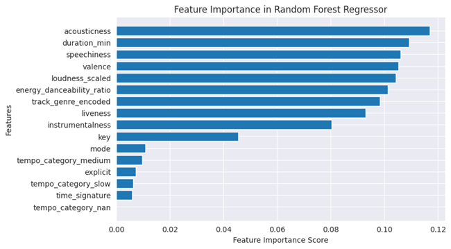

Spotify Trend Analysis

This project explores Spotify music trends using a dataset of audio features and metadata of tracks. The goal is to uncover insights about music popularity, analyze artist trends, and build a foundation for potential predictive modeling.
Key Objectives
- Analyze Spotify track data to uncover trends influencing song popularity.
- Determine the impact of audio features like danceability, energy, and tempo on popularity.
- Engineer meaningful features to enhance prediction performance.
- Build and compare multiple regression models to predict song popularity.
- Identify the most influential features using feature importance techniques.
Tools and Libraries
- Python: Core programming language used for data analysis and modeling.
- Pandas: For data manipulation and preprocessing.
- Matplotlib & Seaborn: Data visualization and plotting.
- Scikit-learn: Machine learning modeling and evaluation.
Workflow Overview
- Data Exploration
- Explored key trends across duration, explicit content, danceability, energy, and tempo.
- Analyzed genre-based popularity.
- Feature Engineering
- Dropped irrelevant columns (e.g., track ID, artist name).
- Created derived features like duration_min and energy_danceability_ratio.
- Scaled numerical features like loudness.
- Encoded categorical variables using one-hot and frequency encoding.
- Model Building
- Prepared features (X) and target (y).
- Trained and compared models:
- Linear Regression
- Random Forest Regressor
- SVR
- Gradient Boosting Regressor
- KNN Regressor
- Decision Tree Regressor
- Evaluated performance using MSE, RMSE, and R² score.
- Final Model Selection
- Selected Random Forest Regressor as the best-performing model.
- Tuned hyperparameters for optimal performance.
- Feature Importance Analysis
- Identified top features that drive popularity predictions.
- Visualized their importance for better interpretability.
- Dataset Export
- Saved final processed dataset as processed_spotify_train.csv.
Visual Insights
- Song Duration vs Popularity:
Shorter songs (under 10 minutes) tend to be more popular.
- Explicit Songs vs Popularity:
Explicit songs have a higher average popularity than non-explicit ones.
- Danceability & Energy vs Popularity:
Tracks with higher danceability and energy are generally more popular.
- Tempo vs Popularity:
Fast-tempo tracks slightly outperform slower ones in popularity.
- Top Genres:
Certain genres like pop-film, k-pop, and chill rank highest in average popularity.
- Feature Importance (Random Forest Regressor):
